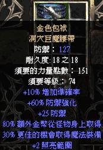
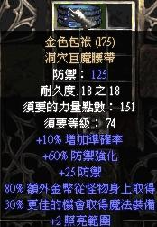
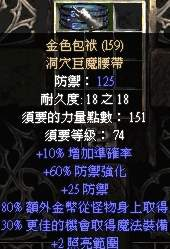
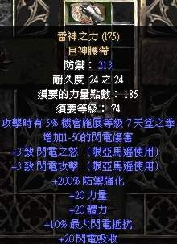
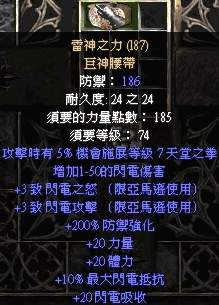
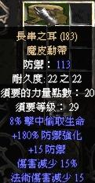

暗黑收藏品
|
腰帶區 |
||
|

升級防禦變動: 119 - 130 來源: 美西/普通天梯3季 1.11 |

升級防禦變動: 119 - 130 來源: 美西/普通天梯2季 1.10 |

升級防禦變動: 119 - 130 來源: 美西/普通天梯2季 1.10 |
|  升級防禦變動: 183 - 213 來源: 美西/普通天梯2季 1.10 雙完美!!! |
 升級防禦變動: 183 - 213 來源: 美西/普通天梯2季 1.10 |

來源: 美西/普通 1.10 |